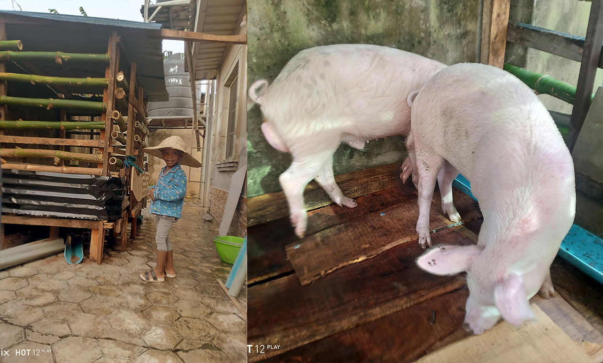

Pig Breeds
Learn about popular pig breeds and their suitability for meat production.
Explore BreedsLives feeding that matters…

Pig farming plays a vital role in food security and protein supply. At Eflux Piggery & Pork, we promote sustainable pig farming practices that support healthy livestock and quality pork production. Our aim is to promote sustainable pig farming practices and provide reliable information about pork as a protein source.
Pork is a rich source of protein and essential nutrients, making it an important part of a balanced diet when produced and consumed responsibly.
We are here to give educational and practical information for farmers, students, and consumers interested in pig production and pork consumption. Our audience are small-scale farmers, agricultural students, and individuals interested in learning more about pork nutrition and recipes.Learn about popular pig breeds and their suitability for meat production.
Explore BreedsDiscover cost-effective feeding strategies that improve pig growth.
View Feeding TipsTry simple and nutritious pork recipes using locally available ingredients.
See Recipes